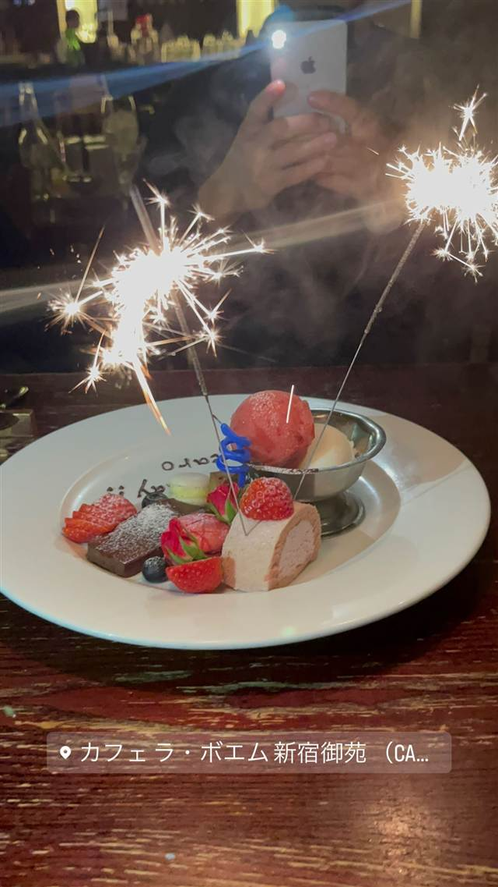
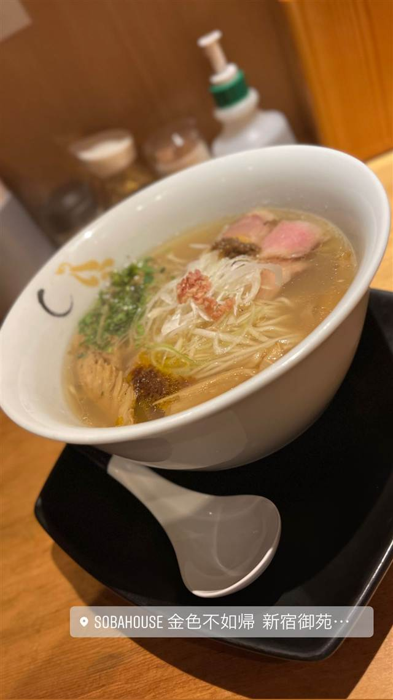
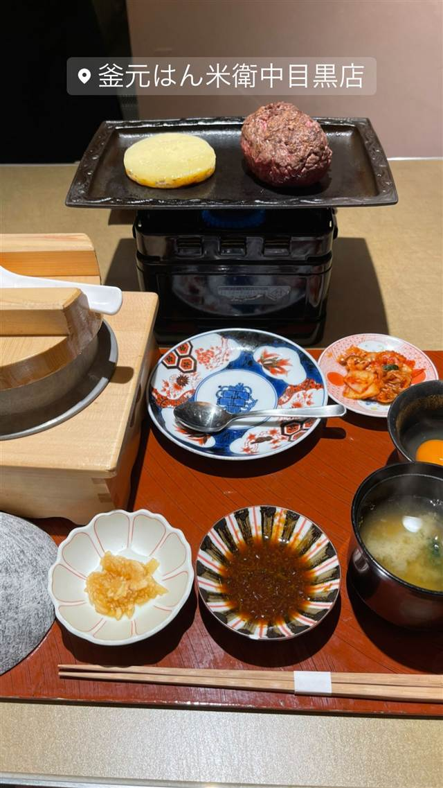

Hamburg Will（ハンバーグ ウィル）
岩手県産ブランド豚を100%使用、6種のパテから選べるハンバーグ
HAMBURG WILL
新宿御苑近くにある豚肉100%のハンバーグ専門店。岩手県のブランド豚「岩中豚」を使い、6種のパテと3種のソースの組み合わせで楽しめるのが特徴。2007年の開業以来ランチタイムには行列ができる、食べログ百名店選出の人気店。
TRIVIA
豆知識
- 国産では珍しい岩手県のブランド豚「岩中豚」を100%使用している。
- ハンバーグは6種のパテと3種のソースを自由に組み合わせて楽しめる。
REVIEWS
世間の評判
3.69食べログ
岩中豚ハンバーグの人気と行列
- 岩中豚100%のハンバーグのジューシーさを評価する声が多い
- 開店前から行列ができ提供まで長時間待つこともあるという声が多い
- トッピングや飲み物込みで割高になるという指摘もある
- ハンバーグ1個の量が少なめという声もある
食べログ 口コミ3014件
| 創業 | 2007年6月14日開業（新宿御苑本店） |
|---|---|
| 看板 | 岩手県産の銘柄豚「岩中豚」を100%使用したポークハンバーグ。プレーン、粗挽きブラックペッパー、モッツァレラチーズ、軟骨、パンチェッタベーコン、フォアグラの6種類。 |
| こだわり | 牛肉を使わず豚肉100%にこだわり、6種のパテと3種のソースの組み合わせでジューシーさと甘みを引き出す。 |
| 掲載・評価 | 食べログ百名店に選出。 |
| どこから | 都心 |
| 行くなら | 行列 |
| 営業時間 | 月〜金 11:30-15:00、17:30-22:00 土・日 11:00-15:00、17:30-22:00 |
| 予算 | 昼 ¥1,000～¥1,999 夜 ¥3,000～¥3,999 |
| 予約 | 予約可 |
| 場所 | 新宿御苑前 東京都新宿区新宿（新宿御苑前駅近く） |
| メモ | 24席の小さめの店内で、ランチタイムは4回転以上する人気で行列・待ち時間が出ることもある。年中無休。 |
食べたもの：ハンバーグ
NEARBY
近い店・同じ系統の店
-

カフェ 新宿御苑前 カフェ ラ・ボエム 新宿御苑 プッチーニの歌劇に由来する店名、中世ヨーロッパ風の内装 夜 ¥3,000～¥3,999 -

醤油・中華そば 新宿御苑前 SOBAHOUSE 金色不如帰 新宿御苑本店 蛤や真鯛の魚介出汁が香る、ミシュラン一つ星の塩そば 昼 ¥1,000～¥1,999 夜 ¥1,000～¥1,999 -
 ハンバーグ 広尾（4番出口徒歩約5分）
麻布笄軒 広尾本店
昭和42年まで実在した旧町名「麻布笄町」にちなむ洋食店
昼 ¥1,000～¥1,999 夜 ¥2,000～¥2,999
ハンバーグ 広尾（4番出口徒歩約5分）
麻布笄軒 広尾本店
昭和42年まで実在した旧町名「麻布笄町」にちなむ洋食店
昼 ¥1,000～¥1,999 夜 ¥2,000～¥2,999
-
 ハンバーグ 藤沢駅
藤沢ビストロハンバーグ
富士の溶岩石で焼く、国際線ファーストクラスの尾崎牛ハンバーグ
夜 ¥2,000～¥2,999
ハンバーグ 藤沢駅
藤沢ビストロハンバーグ
富士の溶岩石で焼く、国際線ファーストクラスの尾崎牛ハンバーグ
夜 ¥2,000～¥2,999
-
 ハンバーグ 明治神宮前駅
ハンバーグ嘉 (Hamburg Yoshi)
焼肉歴24年の店主が毎朝挽きたての肉を炭火で焼くハンバーグ
夜 ¥1,000～¥1,999
ハンバーグ 明治神宮前駅
ハンバーグ嘉 (Hamburg Yoshi)
焼肉歴24年の店主が毎朝挽きたての肉を炭火で焼くハンバーグ
夜 ¥1,000～¥1,999
-

ハンバーグ 中目黒駅 釜元はん米衛 中目黒店 生のまま出す熟成和牛レアハンバーグを、自分で鉄板焼きに 昼 ¥2,000～¥2,999 夜 ¥2,000～¥2,999